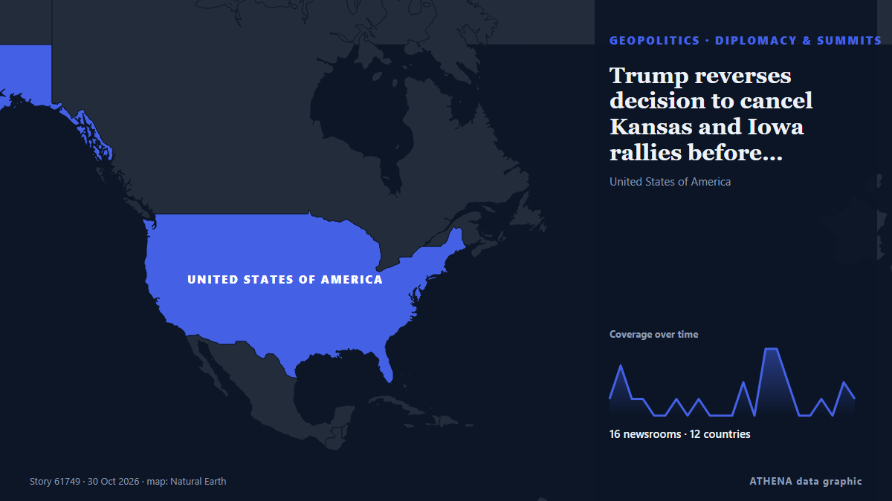

Trump reverses decision to cancel Kansas and Iowa rallies before midterms

The president cancelled the events in favor of tele-rallies, as Republicans face a fight to retain control of Congress Donald Trump cancelled, and then promptly uncancelled, two in-person rallies in… από The Guardian
Αναφέρθηκε ανεξάρτητα από 16 μέσα σε 12 χώρες από τις 29 Οκτ, πρώτο το TRT World· η κάλυψη εξασθενεί. Το ATHENA δεν βρίσκει ενδείξεις κινδύνου στην κάλυψη. Βεβαιότητα 87% (υψηλή): το επιβεβαιώνουν 16 ανεξάρτητα μέσα, μέση αξιοπιστία 77%. Μέσα ανά χώρα: Κατάρ (3), Ηνωμένες Πολιτείες (3), Ηνωμένο Βασίλειο (3). Κάλυψη: 29 Οκτ έως 30 Οκτ, 22 ώρες.
Γιατί έχει σημασία: Οι εξελίξεις στην ασφάλεια και τη διπλωματία μπορούν να μετατοπίσουν συμμαχίες, εμπόριο και αγορές πολύ πέρα από τις χώρες που εμπλέκονται.
Τι άλλαξε: 24 νέες αναφορές από 16 μέσα στο 24ωρο έως 30 Οκτ.
Πρώτη διατύπωση: Trump cancels Iowa, Kansas midterm events, opts for ‘tele-rallies’
Οι τίτλοι των ειδήσεων παρουσιάζονται στα αγγλικά, όπως δημοσιεύτηκαν.
Με μια ματιά
Επιλέγεται, βαθμολογείται και γράφεται από τη δημοσιευμένη μεθοδολογία του ATHENA. Κανένας συντάκτης δεν παρεμβαίνει σε μεμονωμένα γεγονότα. Πώς παράγεται ›
| 29 Oct 23:41 UTC | 1 |
|---|---|
| 30 Oct 00:41 UTC | 3 |
| 30 Oct 01:41 UTC | 1 |
| 30 Oct 02:41 UTC | 1 |
| 30 Oct 03:41 UTC | 0 |
| 30 Oct 04:41 UTC | 0 |
| 30 Oct 05:41 UTC | 1 |
| 30 Oct 06:41 UTC | 0 |
| 30 Oct 07:41 UTC | 1 |
| 30 Oct 08:41 UTC | 0 |
| 30 Oct 09:41 UTC | 0 |
| 30 Oct 10:41 UTC | 0 |
| 30 Oct 11:41 UTC | 2 |
| 30 Oct 12:41 UTC | 0 |
| 30 Oct 13:41 UTC | 4 |
| 30 Oct 14:41 UTC | 4 |
| 30 Oct 15:41 UTC | 2 |
| 30 Oct 16:41 UTC | 0 |
| 30 Oct 17:41 UTC | 0 |
| 30 Oct 18:41 UTC | 1 |
| 30 Oct 19:41 UTC | 0 |
| 30 Oct 20:41 UTC | 2 |
| 30 Oct 21:41 UTC | 1 |
Γιατί αυτοί οι αριθμοί
Σημασία
Κίνδυνος
Βεβαιότητα
Η κάλυψη — ποιος το ανέφερε και πότε
ο τίτλος όπως δημοσιεύτηκε · ανοίγει το πρωτότυπο- TRT World · ΤουρκίαTrump cancels last US midterm rallies, plans to phone in other campaign events
- Al Jazeera English · ΚατάρTrump cancels Iowa, Kansas midterm events, opts for ‘tele-rallies’
- The Hill · Ηνωμένες ΠολιτείεςTrump to join tele-rallies 19 states after midterm event cancellations
- The Jerusalem Post · ΙσραήλTrump cancels weekend rallies, plans to phone in to other midterm campaign events
- National Post · ΚαναδάςTrump cancels midterm appearances, will campaign via ‘tele-rallies’
- Sydney Morning Herald · ΑυστραλίαTrump cancels final midterm rallies then fat shames reporter who asked why
- Al Jazeera English · ΚατάρUS midterms: 4 days to go – What the polls say as Trump cancels two rallies
- Asharq Al-Awsat (English) · Σαουδική ΑραβίαTrump Reinstates Rallies in Turbulent End to US Midterms Campaign
- The New Arab · INTTrump cancels campaign appearances days before midterm votes
- The New Arab · INTTrump reverses cancellation of Iowa, Kansas campaign appearances
- The Independent · Ηνωμένο ΒασίλειοTrump reverses course after reporter calls him out over canceling midterms rallies
- The Straits Times · ΣιγκαπούρηTrump backtracks on rallies in turbulent end to midterms campaign
- The Hill · Ηνωμένες ΠολιτείεςTrump's in-person rallies in Kansas, Iowa back on
- TRT World · ΤουρκίαTrump revives two red-state rallies in final midterm push
- The Independent · Ηνωμένο ΒασίλειοMidterms 2026: Early voting sees big turnout in battleground Senate states as Trump begins final election push
- The Guardian · Ηνωμένο ΒασίλειοTrump reverses decision to cancel Kansas and Iowa rallies before midterms
- Al Jazeera English · ΚατάρTrump reverses course, reinstates cancelled campaign rallies
- Vanguard · ΝιγηρίαTrump reinstates rallies in Kansas, Iowa before midterms
- The Korea Times · Νότια ΚορέαTrump will rally in Iowa and Kansas after initially canceling weekend trips before midterms
- Sydney Morning Herald · ΑυστραλίαTrump revives final midterm rallies after erupting over idea he was ‘sick’
- Free Malaysia Today · ΜαλαισίαTrump reinstates rallies in turbulent end to midterm campaign
- PBS NewsHour · Ηνωμένες ΠολιτείεςAs early voting surges, Trump reshuffles his schedule to add back rallies in Iowa and Kansas
- Arab News · Σαουδική ΑραβίαTrump backtracks on rallies in turbulent end to midterms campaign